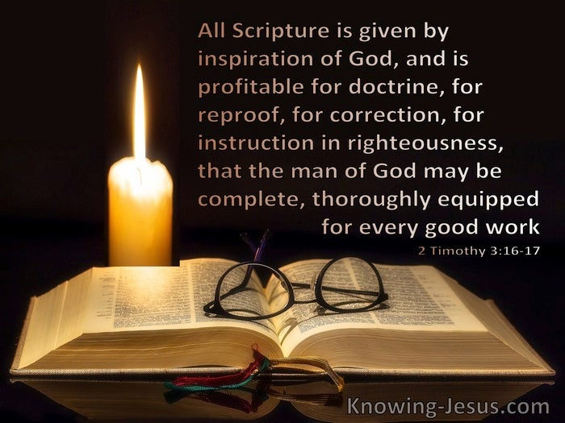

목차
- 9/1
- 9/2
- 9/3
- 9/4
9/2 Bible Class

Introduction
Theology and Scripture
- General Revelation
(natural theology) vs. Special Revelation (Romans 1:18-20)
- Every author has different theological emphasis
- Christians believe that there are major underlying, and overarching,
themes that connect the entire bible
- Jesus, salvation, the people of God
- God has shown Himself through His Creation;
it is possible to know God without the Bible
- Revelation → Reveal
- We can know God without the Bible (Natural Theology),
but we need Jesus Christ to gain salvation (Special Revelation)
- Jesus is the epitome of Special Revelation
- We now have both General Revelation and Special Revelation